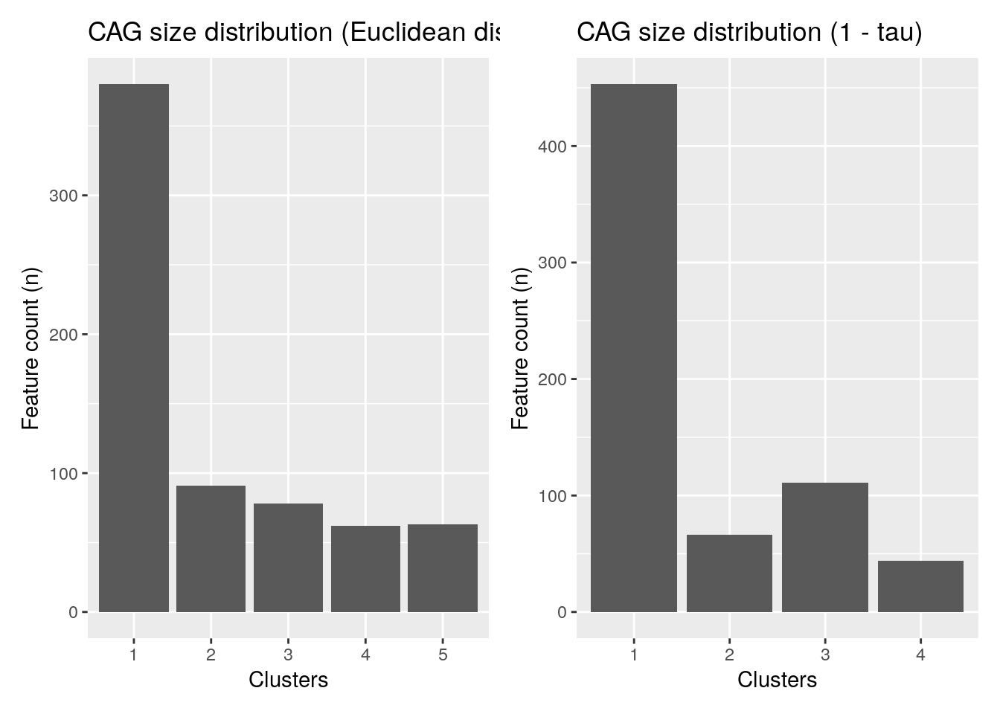

5 Taxonomic Information
Taxonomic information is a key part of analyzing microbiome data and without it, any type of data analysis probably will not make much sense. However, the degree of detail of taxonomic information differs depending on the dataset and annotation data used.
Therefore, the mia package expects a loose assembly of taxonomic information and assumes certain key aspects:
- Taxonomic information is given as character vectors or factors in the
rowDataof aSummarizedExperimentobject. - The columns containing the taxonomic information must be named
domain,kingdom,phylum,class,order,family,genus,speciesor with a capital first letter. - the columns must be given in the order shown above
- column can be omited, but the order must remain
In this chapter, we will refer to co-abundant groups as CAGs, which are clusters of taxa that co-vary across samples.
5.1 Assigning taxonomic information.
There are a number of methods to assign taxonomic information. We like to give a short introduction about the methods available without ranking one over the other. This has to be your choice based on the result for the individual dataset.
5.1.1 dada2
The dada2 package (Callahan et al. 2016) implements the assignTaxonomy function, which takes as input the ASV sequences associated with each row of data and a training dataset. For more information visit the dada2 homepage.
5.1.2 DECIPHER
The DECIPHER package (Wright 2020) implements the IDTAXA algorithm to assign either taxonomic information or function information. For mia only the first option is of interest for now and more information can be found on the DECIPHER website.
5.2 Functions to access taxonomic information
checkTaxonomy checks whether the taxonomic information is usable for mia
checkTaxonomy(tse)
## [1] TRUESince the rowData can contain other data, taxonomyRanks will return the columns mia assumes to contain the taxonomic information.
taxonomyRanks(tse)
## [1] "Kingdom" "Phylum" "Class" "Order" "Family" "Genus" "Species"This can then be used to subset the rowData to columns needed.
rowData(tse)[, taxonomyRanks(tse)]
## DataFrame with 19216 rows and 7 columns
## Kingdom Phylum Class Order Family
## <character> <character> <character> <character> <character>
## 549322 Archaea Crenarchaeota Thermoprotei NA NA
## 522457 Archaea Crenarchaeota Thermoprotei NA NA
## 951 Archaea Crenarchaeota Thermoprotei Sulfolobales Sulfolobaceae
## 244423 Archaea Crenarchaeota Sd-NA NA NA
## 586076 Archaea Crenarchaeota Sd-NA NA NA
## ... ... ... ... ... ...
## 278222 Bacteria SR1 NA NA NA
## 463590 Bacteria SR1 NA NA NA
## 535321 Bacteria SR1 NA NA NA
## 200359 Bacteria SR1 NA NA NA
## 271582 Bacteria SR1 NA NA NA
## Genus Species
## <character> <character>
## 549322 NA NA
## 522457 NA NA
## 951 Sulfolobus Sulfolobusacidocalda..
## 244423 NA NA
## 586076 NA NA
## ... ... ...
## 278222 NA NA
## 463590 NA NA
## 535321 NA NA
## 200359 NA NA
## 271582 NA NAtaxonomyRankEmpty checks for empty values in the given rank and returns a logical vector of length(x).
all(!taxonomyRankEmpty(tse, rank = "Kingdom"))
## [1] TRUE
table(taxonomyRankEmpty(tse, rank = "Genus"))
##
## FALSE TRUE
## 8008 11208
table(taxonomyRankEmpty(tse, rank = "Species"))
##
## FALSE TRUE
## 1413 17803getTaxonomyLabels is a multi-purpose function, which turns taxonomic information into a character vector of length(x)
head(getTaxonomyLabels(tse))
## [1] "Class:Thermoprotei" "Class:Thermoprotei_1"
## [3] "Species:Sulfolobusacidocaldarius" "Class:Sd-NA"
## [5] "Class:Sd-NA_1" "Class:Sd-NA_2"By default, this will use the lowest non-empty information to construct a string with the following scheme level:value. If all levels are the same, this part is omitted, but can be added by setting with_rank = TRUE.
phylum <- !is.na(rowData(tse)$Phylum) &
vapply(data.frame(apply(rowData(tse)[, taxonomyRanks(tse)[3:7]], 1L, is.na)), all, logical(1))
head(getTaxonomyLabels(tse[phylum,]))
## [1] "Crenarchaeota" "Crenarchaeota_1" "Crenarchaeota_2"
## [4] "Actinobacteria" "Actinobacteria_1" "Spirochaetes"
head(getTaxonomyLabels(tse[phylum,], with_rank = TRUE))
## [1] "Phylum:Crenarchaeota" "Phylum:Crenarchaeota_1"
## [3] "Phylum:Crenarchaeota_2" "Phylum:Actinobacteria"
## [5] "Phylum:Actinobacteria_1" "Phylum:Spirochaetes"By default the return value of getTaxonomyLabels contains only unique elements by passing it through make.unique. This step can be omitted by setting make_unique = FALSE.
head(getTaxonomyLabels(tse[phylum,], with_rank = TRUE, make_unique = FALSE))
## [1] "Phylum:Crenarchaeota" "Phylum:Crenarchaeota" "Phylum:Crenarchaeota"
## [4] "Phylum:Actinobacteria" "Phylum:Actinobacteria" "Phylum:Spirochaetes"To apply the loop resolving function resolveLoop from the TreeSummarizedExperiment package (Huang 2020) within getTaxonomyLabels, set resolve_loops = TRUE.
The function getUnique gives a list of unique taxa for the specified taxonomic rank.
5.2.1 Generate a hierarchy tree on the fly
A hierarchy tree is not an actual phylogenetic tree. A hierarchy tree shows mapping between the taxonomic levels in taxonomic rank table (included in rowData), rather than the detailed phylogenetic relations included in a phylogenetic tree
For instance, the TreeSummarizedExperiment dataset Tengeler2020 contains an actual phylogenetic tree.
data(Tengeler2020)
tse2 <- Tengeler2020
phylo_tree <- rowTree(tse2)
phylo_tree
##
## Phylogenetic tree with 151 tips and 149 internal nodes.
##
## Tip labels:
## [Eubacterium]_coprostanoligenes_group, [Clostridium]_innocuum_group, [Clostridium]_innocuum_group_1, Dielma, Unidentified_Lachnospiraceae_12, Epulopiscium, ...
## Node labels:
## node_1, node_2, node_3, node_4, node_5, node_6, ...
##
## Unrooted; includes branch lengths.To create a hierarchy tree, getHierarchyTree used the information and returns a phylo object. Duplicate information from the rowData is removed.
getHierarchyTree(tse)
##
## Phylogenetic tree with 1645 tips and 1089 internal nodes.
##
## Tip labels:
## Species:Cenarchaeumsymbiosum, Species:pIVWA5, Species:CandidatusNitrososphaeragargensis, Species:SCA1145, Species:SCA1170, Species:Sulfolobusacidocaldarius, ...
## Node labels:
## root:ALL, Kingdom:Archaea, Phylum:Crenarchaeota, Class:C2, Class:Sd-NA, Class:Thaumarchaeota, ...
##
## Rooted; includes branch lengths.tse <- addHierarchyTree(tse)
tse
## class: TreeSummarizedExperiment
## dim: 19216 26
## metadata(0):
## assays(1): counts
## rownames(19216): 549322 522457 ... 200359 271582
## rowData names(7): Kingdom Phylum ... Genus Species
## colnames(26): CL3 CC1 ... Even2 Even3
## colData names(7): X.SampleID Primer ... SampleType Description
## reducedDimNames(0):
## mainExpName: NULL
## altExpNames(0):
## rowLinks: a LinkDataFrame (19216 rows)
## rowTree: 1 phylo tree(s) (1645 leaves)
## colLinks: NULL
## colTree: NULLThe implementation is based on the toTree function from the TreeSummarizedExperiment package (Huang 2020).
5.3 Data agglomeration
One of the main applications of taxonomic information in regards to count data is to agglomerate count data on taxonomic levels and track the influence of changing conditions through these levels. For this mia contains the mergeFeaturesByRank function. The ideal location to store the agglomerated data is as an alternative experiment.
tse <- transformAssay(tse, assay.type = "counts", method = "relabundance")
altExp(tse, "Family") <- mergeFeaturesByRank(tse, rank = "Family",
agglomerateTree = TRUE)
altExp(tse, "Family")
## class: TreeSummarizedExperiment
## dim: 334 26
## metadata(1): agglomerated_by_rank
## assays(2): counts relabundance
## rownames(334): 125ds10 211ds20 ... vadinHA31 wb1_P06
## rowData names(7): Kingdom Phylum ... Genus Species
## colnames(26): CL3 CC1 ... Even2 Even3
## colData names(7): X.SampleID Primer ... SampleType Description
## reducedDimNames(0):
## mainExpName: NULL
## altExpNames(0):
## rowLinks: a LinkDataFrame (334 rows)
## rowTree: 1 phylo tree(s) (334 leaves)
## colLinks: NULL
## colTree: NULLIf multiple assays (counts and relabundance) exist, both will be agglomerated.
assayNames(tse)
## [1] "counts" "relabundance"
assayNames(altExp(tse, "Family"))
## [1] "counts" "relabundance"assay(altExp(tse, "Family"), "relabundance")[1:5, 1:7]
## CL3 CC1 SV1 M31Fcsw M11Fcsw M31Plmr
## 125ds10 5.324e-05 0.000e+00 0.000e+00 0.000e+00 0.000e+00 0.000e+00
## 211ds20 1.389e-05 3.699e-05 4.731e-04 0.000e+00 0.000e+00 5.564e-06
## 5B-12 1.180e-04 2.272e-04 2.638e-04 0.000e+00 0.000e+00 0.000e+00
## A714017 3.472e-06 3.523e-06 1.434e-06 0.000e+00 2.890e-06 1.391e-06
## ACK-M1 5.902e-05 5.636e-05 2.151e-04 4.147e-05 4.671e-05 4.312e-05
## M11Plmr
## 125ds10 0.000e+00
## 211ds20 8.297e-05
## 5B-12 0.000e+00
## A714017 9.219e-06
## ACK-M1 3.342e-04altExpNames now consists of Family level data. This can be extended to use any taxonomic level listed in mia::taxonomyRanks(tse).
Rare taxa can also be aggregated into a single group “Other” instead of filtering them out. A suitable function for this is mergeFeaturesByPrevalence. The number of rare taxa is higher on the species level, which causes the need for data agglomeration by prevalence.
altExp(tse, "Species_byPrevalence") <- mergeFeaturesByPrevalence(tse,
rank = "Species",
other_label = "Other",
prevalence = 5 / 100,
detection = 1 / 100,
as_relative = T)
altExp(tse, "Species_byPrevalence")
## class: TreeSummarizedExperiment
## dim: 27 26
## metadata(2): agglomerated_by_rank agglomerated_by_rank
## assays(2): counts relabundance
## rownames(27): Class:Thermoprotei Species:Actinobacillusporcinus ...
## Species:Veillonellaparvula Other
## rowData names(7): Kingdom Phylum ... Genus Species
## colnames(26): CL3 CC1 ... Even2 Even3
## colData names(7): X.SampleID Primer ... SampleType Description
## reducedDimNames(0):
## mainExpName: NULL
## altExpNames(0):
## rowLinks: NULL
## rowTree: NULL
## colLinks: NULL
## colTree: NULL
assay(altExp(tse, "Species_byPrevalence"), "relabundance")[1:5, 1:3]
## CL3 CC1 SV1
## Class:Thermoprotei 9.722e-01 9.757e-01 8.938e-01
## Species:Actinobacillusporcinus 1.389e-05 2.466e-05 1.147e-05
## Species:Alistipesputredinis 4.166e-05 3.963e-05 5.161e-05
## Species:Anaerococcushydrogenalis 7.407e-05 8.807e-05 6.595e-05
## Species:Bacteroidescaccae 1.007e-04 7.926e-05 1.104e-04# Saving the tse for later
tseGlobalPatterns <- tse5.3.1 Taxa clustering
Another way to agglomerate the data is to cluster the taxa. To do so, we usually start by doing a compositionality aware transformation such as CLR, followed by the application of a standard clustering method.
Here is an example that does a CLR transformation followed by the hierarchical clustering algorithm.
First, we import the library bluster that simplifies the clustering.
library(bluster)Then we do the CLR transform followed by the clustering. We will cluster with two different distances: the euclidean distance and the kendall distance.
# Get the data
data("peerj13075", package = "mia")
tse <- peerj13075
# The result of the CLR transform is stored in the assay clr
tse <- transformAssay(tse, method = "clr", pseudocount = 1)
tse <- transformAssay(tse, assay.type = "clr", method = "z",
MARGIN = "features")
# Cluster (with euclidean distance) on the features of the z assay
tse <- addCluster(tse,
assay.type = "z",
clust.col = "hclustEuclidean",
MARGIN = "features",
HclustParam(dist.fun = stats::dist, method = "ward.D2"))
# Declare the Kendall dissimilarity computation function
kendall_dissimilarity <- function(x) {
as.dist(1 - cor(t(x), method = "kendall"))
}
# Cluster (with Kendall dissimilarity) on the features of the z assay
tse <- addCluster(tse,
assay.type = "z",
clust.col = "hclustKendall",
MARGIN = "features",
HclustParam(dist.fun = kendall_dissimilarity, method = "ward.D2"))Let us store the resulting cluster indices in the rowData column specified with the clust.col parameter.
# Checking the clusters
clusters_euclidean <- rowData(tse)$hclustEuclidean
head(clusters_euclidean, 10)
## OTU1 OTU2 OTU7 OTU9 OTU10 OTU12 OTU14 OTU15 OTU18 OTU19
## 1 2 1 1 1 1 3 4 3 2
## Levels: 1 2 3 4 5
clusters_kendall <- rowData(tse)$hclustKendall
head(clusters_kendall, 10)
## OTU1 OTU2 OTU7 OTU9 OTU10 OTU12 OTU14 OTU15 OTU18 OTU19
## 1 2 1 3 3 1 3 1 1 3
## Levels: 1 2 3 4To better visualize the results and the distribution of the clusters, we can plot the histogram of the clusters.
library(ggplot2)
library(patchwork) # TO arrange several plots as a grid
plot1 <- ggplot(rowData(tse), aes(x = clusters_euclidean)) +
geom_bar() +
labs(title = "CAG size distribution (Euclidean distance)",
x = "Clusters", y = "Feature count (n)")
plot2 <- ggplot(rowData(tse), aes(x = clusters_kendall)) +
geom_bar() +
labs(title = "CAG size distribution (1 - tau)",
x = "Clusters", y = "Feature count (n)")
plot1 + plot2 + plot_layout(ncol = 2)
It’s also possible to merge the rows by cluster.
# Aggregate clusters as a sum of each cluster values
tse_merged <- mergeFeatures(tse, clusters_euclidean)
tse_merged
## class: TreeSummarizedExperiment
## dim: 5 58
## metadata(0):
## assays(3): counts clr z
## rownames(5): 1 2 3 4 5
## rowData names(8): kingdom phylum ... hclustEuclidean hclustKendall
## colnames(58): ID1 ID2 ... ID57 ID58
## colData names(5): Sample Geographical_location Gender Age Diet
## reducedDimNames(0):
## mainExpName: NULL
## altExpNames(0):
## rowLinks: NULL
## rowTree: NULL
## colLinks: NULL
## colTree: NULLWe can note that it worked as planned since there were 5 clusters and there are now 5 rows.
5.4 Data transformation
Data transformations are common in (microbial) ecology (Legendre and Gallagher 2001) and used to improve compatibility with assumptions related to specific statistical methods, mitigate biases, enhance the comparability of samples or features, or to obtain more interpretable values.
Examples include the logarithmic transformation, calculation of relative abundances (percentages), and compositionality-aware transformations such as the centered log-ratio transformation (clr).
Let us summarize some commonly used transformations in microbiome data science; further details and benchmarkings available in the references.
-
‘relabundance’ relative transformation; also known as total sum scaling (TSS) and compositional transformation. This converts counts into percentages (at the scale [0, 1]) that sum up to
- Much of the currently available taxonomic abundance data from high-throughput assays (16S, metagenomic sequencing) is compositional by nature, even if the data is provided as counts (Gloor et al. 2017).
‘clr’ Centered log ratio transformation (Aitchison 1986) is used to reduce data skewness and compositionality bias in relative abundances, while bringing the data to the logarithmic scale. This transformation is frequently applied in microbial ecology (Gloor et al. 2017). However, this transformation only applies to positive values. Usual solution is to add pseudocount, which adds another type of bias in the data. The robust clr transformation (‘rclr’) aims to circumvent the need to add a pseudocount. While the resulting values from these transformations are difficult interpret directly, this transformation may enhance comparability of relative differences between samples. It is part of a broader Aitchison family of transformations; the additive log ratio transformation (`alr’) is also available. The robust clr (“rclr”) is similar to regular clr (see above) but allows data with zeroes and avoids the need to add pseudocount Martino et al. (2019).
‘pa’ presence/absence transformation ignores abundances and only indicates whether the given feature is detected above the given threshold (default: 0). This simple transformation is relatively widely used in ecological research. It has shown good performance in microbiome-based classification performance (Giliberti et al. 2022, Karwowska2024).
‘z’ Z transformation scales data to zero mean and unit variance; this us used to bring features (or samples) to more comparable levels in terms of mean and scale of the values. This can enhance visualization and interpretation of the data
‘log’, ‘log2’, ‘log10’ Logarithmic transformations; used e.g. to reduce data skewness; with compositional data the
clr(orrclr) transformation is often preferred.‘hellinger’ Hellinger transformation equals to the square root of relative abundances. This ecological transformation can be useful if we are interested in changes in relative abundances.
‘rank’ Rank transformation replaces each value by its rank. Also see ‘rrank’ (relative rank transformation). This has use for instance in non-parametric statistics.
Other available transformations include Chi square (‘chi.square’), Frequency transformation (‘frequency’), and Make margin sum of squares equal to one (‘normalize’)
5.4.1 Transforming the data in practice
Transformations on abundance assays can be performed with mia::transformAssay(), keeping both the original and the transformed assay(s). The transformed abundance assay is then stored back to the ‘assays’ slot in the data object. The function applies sample-wise or column-wise transformation when MARGIN = ‘samples’, feature-wise or row-wise transformation when MARGIN = ‘features’.
A complete list of available transformations and parameters, is available in the function help.
# Load example data
library(mia)
data("GlobalPatterns", package = "mia")
tse <- GlobalPatterns
# Transform "counts" assay to relative abundances ("relabundance"), with pseudocount 1
tse <- transformAssay(tse, assay.type = "counts", method = "relabundance", pseudocount = 1)
# Transform relative abundance assay ("relabundance") to "clr", using pseudocount if necessary;
# name the resulting assay to "clr"
tse <- transformAssay(x = tse, assay.type = "relabundance", method = "clr",
pseudocount = TRUE, name = "clr")Get the values in the resulting assay, and view some of the first entries of it with the head command.
head(assay(tse, "clr"))
## CL3 CC1 SV1 M31Fcsw M11Fcsw M31Plmr M11Plmr F21Plmr
## 549322 -0.8644 -0.9978 -0.683 -0.2439 -0.2096 -0.323 -0.4427 -0.2559
## 522457 -0.8644 -0.9978 -0.683 -0.2439 -0.2096 -0.323 -0.4427 -0.2559
## 951 -0.8644 -0.9978 -0.683 -0.2439 -0.2096 -0.323 0.1670 -0.2559
## 244423 -0.8644 -0.9978 -0.683 -0.2439 -0.2096 -0.323 -0.4427 -0.2559
## 586076 -0.8644 -0.9978 -0.683 -0.2439 -0.2096 -0.323 -0.4427 -0.2559
## 246140 -0.8644 -0.9978 -0.683 -0.2439 -0.2096 -0.323 -0.4427 -0.2559
## M31Tong M11Tong LMEpi24M SLEpi20M AQC1cm AQC4cm AQC7cm NP2
## 549322 -0.1956 -0.1537 -0.2802 0.2318 2.3342 3.27787 3.6714 0.3713
## 522457 -0.1956 -0.1537 -0.2802 -0.2737 -0.6105 0.03919 0.8349 -0.2243
## 951 -0.1956 -0.1537 -0.2802 -0.2737 -0.6105 -0.65395 -0.6651 -0.2243
## 244423 -0.1956 -0.1537 -0.2802 -0.2737 -0.6105 1.83095 2.2157 -0.2243
## 586076 -0.1956 -0.1537 -0.2802 -0.2737 -0.6105 0.03919 -0.2075 -0.2243
## 246140 -0.1956 -0.1537 -0.2802 -0.2737 -0.6105 -0.24849 0.3432 -0.2243
## NP3 NP5 TRRsed1 TRRsed2 TRRsed3 TS28 TS29 Even1
## 549322 -0.3632 -0.2974 -0.2641 -0.4479 -0.4185 -0.2371 -0.2189 -0.289
## 522457 -0.3632 -0.2974 -0.2641 -0.4479 -0.4185 -0.2371 -0.2189 -0.289
## 951 -0.3632 -0.2974 -0.2641 -0.4479 -0.4185 -0.2371 -0.2189 -0.289
## 244423 -0.3632 -0.2974 -0.2641 -0.4479 -0.4185 -0.2371 -0.2189 -0.289
## 586076 -0.3632 -0.2974 -0.2641 -0.4479 -0.4185 -0.2371 -0.2189 -0.289
## 246140 -0.3632 -0.2974 -0.2641 -0.4479 -0.4185 -0.2371 -0.2189 -0.289
## Even2 Even3
## 549322 -0.2174 -0.2031
## 522457 -0.2174 -0.2031
## 951 -0.2174 -0.2031
## 244423 -0.2174 -0.2031
## 586076 -0.2174 -0.2031
## 246140 -0.2174 -0.2031In ‘pa’ transformation, abundance table is converted to presence/absence table that ignores abundances and only indicates whether the given feature is detected. This simple transformation is relatively widely used in ecological research. It has shown good performance in microbiome-based classification performance (Giliberti et al. 2022, Karwowska2024).
# Here, `assay.type` is not explicitly specified.
# Then The function uses the "counts" assay for the transformation.
tse <- transformAssay(tse, method = "pa")
head(assay(tse, "pa"))
## CL3 CC1 SV1 M31Fcsw M11Fcsw M31Plmr M11Plmr F21Plmr M31Tong M11Tong
## 549322 0 0 0 0 0 0 0 0 0 0
## 522457 0 0 0 0 0 0 0 0 0 0
## 951 0 0 0 0 0 0 1 0 0 0
## 244423 0 0 0 0 0 0 0 0 0 0
## 586076 0 0 0 0 0 0 0 0 0 0
## 246140 0 0 0 0 0 0 0 0 0 0
## LMEpi24M SLEpi20M AQC1cm AQC4cm AQC7cm NP2 NP3 NP5 TRRsed1 TRRsed2
## 549322 0 1 1 1 1 1 0 0 0 0
## 522457 0 0 0 1 1 0 0 0 0 0
## 951 0 0 0 0 0 0 0 0 0 0
## 244423 0 0 0 1 1 0 0 0 0 0
## 586076 0 0 0 1 1 0 0 0 0 0
## 246140 0 0 0 1 1 0 0 0 0 0
## TRRsed3 TS28 TS29 Even1 Even2 Even3
## 549322 0 0 0 0 0 0
## 522457 0 0 0 0 0 0
## 951 0 0 0 0 0 0
## 244423 0 0 0 0 0 0
## 586076 0 0 0 0 0 0
## 246140 0 0 0 0 0 0You can now view the entire list of abundance assays in your data object with:
assays(tse)
## List of length 4
## names(4): counts relabundance clr pa